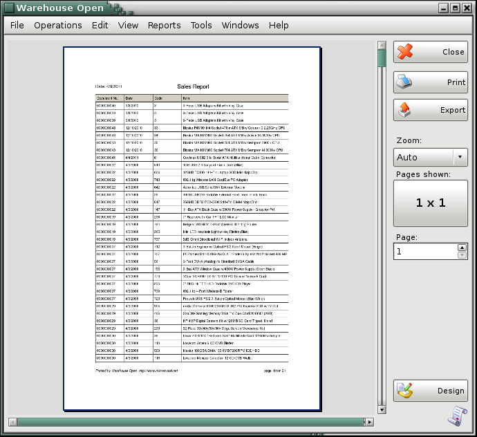
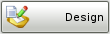

Print preview
The buttons in the right part of the report allow you to zoom, print and set the number of pages that will be visualized on the screen.

Click the  button to print the report.
button to print the report.
Click the  button to export the report to
PDF format.
button to export the report to
PDF format.
Use the  button to zoom the document from
10% to 500%.
button to zoom the document from
10% to 500%.
Click the  button to visualize the report
on one, two, three, four or six pages.
button to visualize the report
on one, two, three, four or six pages.
Click the  button to close the report.
button to close the report.
Button  loads document designer, where you can change the report view.
�2006-2015 Microinvest, All rights reserved